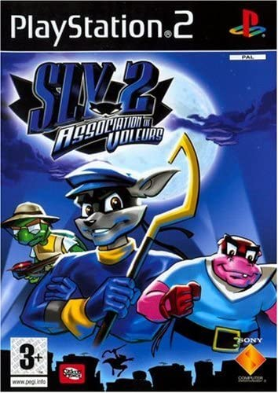

Mes niveaux dans diférentes diciplines:
Niveau en Code: 4/10
Niveau en Graphisme: 3/10
Niveau en Orthographe: 6/10
Mes Jeux Vidéo préférés:



Mon histoire:
J'habite dans un petit village au Nord de Montpellier nommé Assas.
J'ai fait un Bac scientifique spé ISN puis deux années de Musicologie à Paul Valery.
Je me suis inscrit à l'ETPA dans le but de devenir Game Designer.